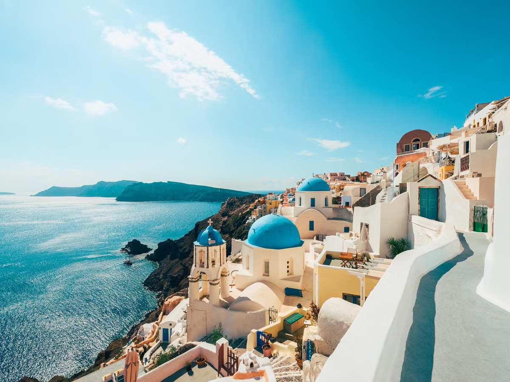

Hi and welcome to my website! My name is Harshini Moon, and I love to travel. Exploring new places has always been an important part of how I learn and experience the world. It allows me to step outside my usual surroundings, interact with diverse people, and gain valuable insights into cultures different from my own. These experiences not only broaden my worldview but also help me grow on a personal and academic level, offering perspectives that I wouldn’t have encountered otherwise. Traveling challenges me to adapt, learn, and appreciate the beauty in diversity, making each journey a transformative experience. In this website, I’ll focus on one of my favorite destinations: Greece. Known for its ancient history, breathtaking islands, and vibrant culture, Greece offers a rich blend of experiences for every traveler. Whether it’s exploring the ruins of Athens, relaxing on the beaches of Santorini, or enjoying traditional Greek cuisine, this country provides endless opportunities to experience something unforgettable. Greece's unique combination of history and natural beauty makes it a destination that never fails to inspire awe and curiosity. Throughout this site, I’ll share why Greece stands out as a must-visit destination and why it holds a special place in my travel experiences!
